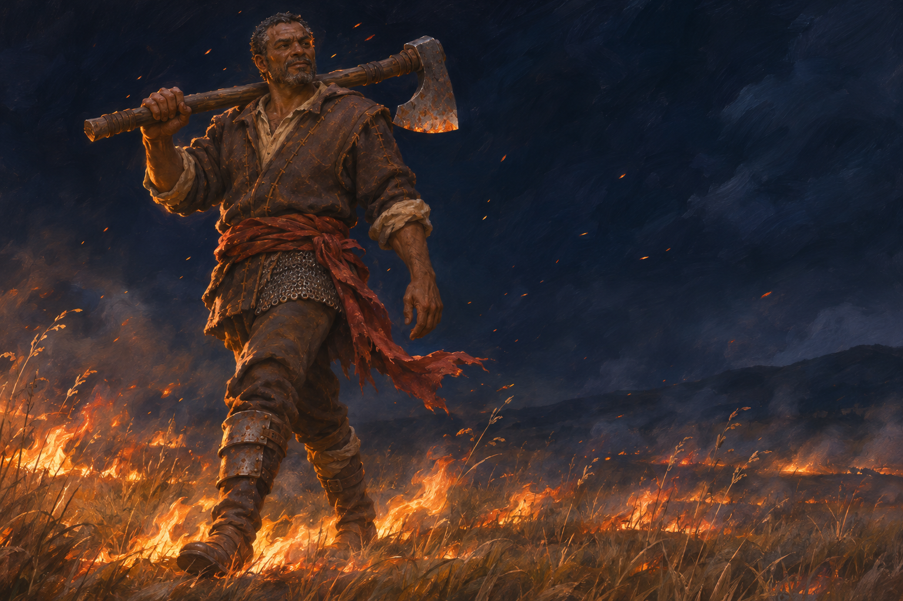
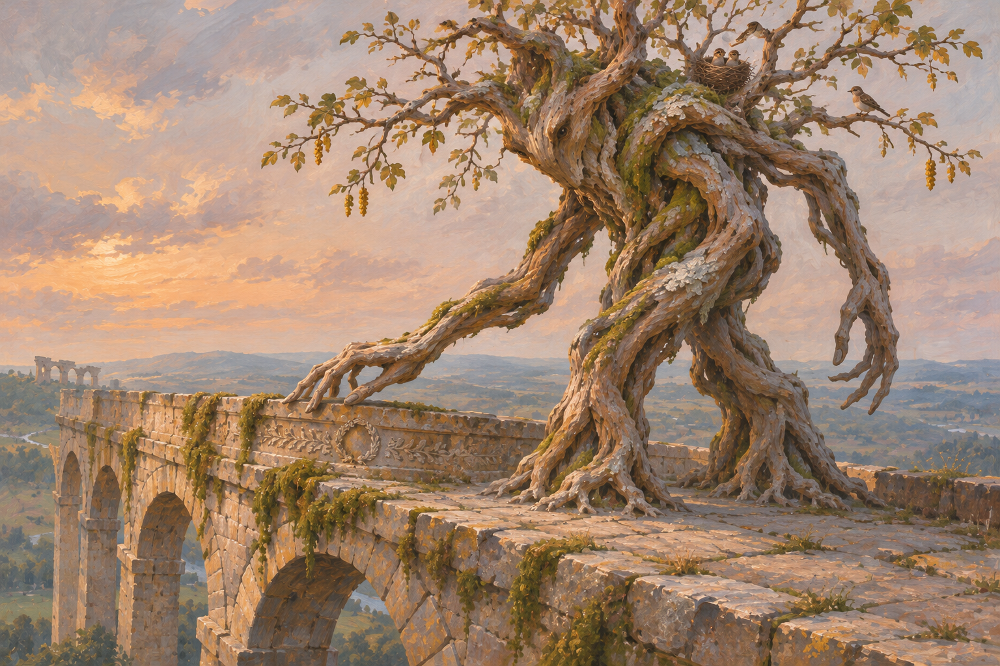

Neutral
G1 The Copper Clasp

A Glimmerfolk woman tries a copper cloak clasp at a small market stall. The scene uses the accepted ear-fans and glimmers as visible anatomy while keeping her individual taste and surroundings provisional.
Small preview
Original review codes are retained; gaps reflect removed entries.
Twelve scenes, four new card paintings, and three requested follow-ups.
Two scenes for each of the six retained peoples. Veyr and the returned woman are retained; the other individuals are fresh interpretations of the species references. The lighting keeps figures readable, with painterly surfaces and places that give the action a reason.
Card titles, jobs, locations and individual alignments are proposals. Four species designs are final; the developed salt–silt, Crest and Coast sheets retain their existing review status.
A Glimmerfolk woman tries a copper cloak clasp at a small market stall. The scene uses the accepted ear-fans and glimmers as visible anatomy while keeping her individual taste and surroundings provisional.

A Glimmerfolk man arrives with a covered basket at an older neighbour’s door. The two figures’ attention and handoff carry the scene, without establishing a universal custom or magical occupation.
Removed during the creator-requested cleanup: m1 through the heather. Prompt and decision records retained.
A long-limbed Moor folk woman walks a high path as a gust presses the heather sideways. Her equipment and route are individual proposals; the accepted furred silhouette and strongly shaped face remain the anchors.
Superseded or rejected artwork removed; decision retained in the archive.
Removed during the creator-requested cleanup: m2 a story by the stove. Prompt and decision records retained.
Two older Moor folk share an animated conversation beside a small stove. This gives the people domestic character and humour without making all of them guardians or woodland mages.
Superseded or rejected artwork removed; decision retained in the archive.

Veyr pauses at the latch of an ordinary shuttered house, still wearing his issued armour. The scene proposes a moment of uncertain recognition, leaving his memories and soul state unresolved.

The returned woman from Another Service sits with a piece of bread in a bare garrison refectory. Her pause suggests the cost of return without making an inability to eat, a missing soul or any particular symptom universal lore.

Salt and silt variants cross a broad flat together with a small handcart and water. The shared anatomy stays visible through their different colouring; their journey proposes no fixed homeland or profession.

A silt-variant woman turns a flatbread while a salt-variant companion shelters beside a low wall. This is one travelling pair’s evening, with shared anatomy and personal equipment carrying the scene.

A Crest folk woman descends a town stair carrying a wrapped parcel, with head, arm and shoulder crests visible through practical clothing. The scene tests the proposed body crests in everyday movement rather than making her another sculptor.

An older Crest folk artisan adds a blue band to a bowl beside an open window. His focused gaze and brush contact make the action clear, while age, occupation and crest variation remain individual proposals.
Removed during the creator-requested cleanup: o1 after the tide. Prompt and decision records retained.
A broad Coast folk woman lifts a small creel from a tidal pool. The grey hide, broad face and stable build come from the selected design; this individual’s fishing activity does not define the people.
Superseded or rejected artwork removed; decision retained in the archive.
Removed during the creator-requested cleanup: o2 an argument at lunch. Prompt and decision records retained.
Two Coast folk disagree companionably over lunch beneath a harbour awning. The scene explores personality and social life without assigning a faction or turning their broad forms into caricatures.
Superseded or rejected artwork removed; decision retained in the archive.
Each card follows an individual introduced in the fresh scenes. These are image and concept proposals; no rules or roster changes have been made.
Removed during the creator-requested cleanup: n2 fervor rusk roadbreaker. Prompt and decision records retained.
The silt-variant traveller confronts a toll barrier with a practical blade and a clear route behind him. This proposes an independent Fervor character, with his gear and resolve carrying the painting rather than a storm effect.
Individual introduced in S1.
Superseded or rejected artwork removed; decision retained in the archive.

The Glimmerfolk woman from the clasp scene opens a locked archive door through a small act of learned magic. The floating key and turning lock have a clear physical relationship, while the magic remains an individual skill.
Individual introduced in G1.

Veyr turns from a familiar doorway as an officer calls him back to duty. His maintained identity and interrupted private moment express Dominion’s claim over him; no soul condition or new universal mechanism is declared.
Individual introduced in D1.

Dessa pauses low among wind-bent grasses, an arrow ready as she watches a distant approach. Her long limbs, furred ruff and fieldcraft give the painting its shape; the alignment and defensive role belong to this character.
Individual introduced in M1.
H1 proposes a complete replacement for the courtyard-bell art. E1 and E2 make only the changes you requested.
Removed during the creator-requested cleanup: h1 rebuff at the archive. Prompt and decision records retained.
A Gnosis practitioner drives an intruder back from an archive entrance with a short pulse of force. This replaces the arbitrary courtyard bell with a clear confrontation and proposes direct learned magic, not a species-wide power; the card’s name and mechanics remain unchanged pending review.
Superseded or rejected artwork removed; decision retained in the archive.

The same fighter and revised light direction, with a modest lift in readable midtones. This is a targeted exposure and paint adjustment, not a new scene.

Superseded or rejected artwork removed; decision retained in the archive.

Restore the original aqueduct and its stone colour while keeping the newer, simpler distant valley. The elder’s original anatomy, quiet movement and connection to the coping remain.

Superseded or rejected artwork removed; decision retained in the archive.
Pairwise rankings are no longer being used to infer your dislikes. These are your actual comments.
| Piece | Your decision | Note |
|---|---|---|
| Oath sentinel | undecided | Initially leaned original for character focus, then saw possible better lighting in revision; will return. Do not resolve the indecision. |
| Harmonic burst | new concept requested | A random bell standing in the courtyard and people falling when struck make no contextual sense. Replace the art with a newly conceived scene, not another bell edit. |
| Cinder firebrand | revise R1 | Likes the new lighting direction a lot; brighten enough that the character is easier to see, preserving the direction. |
| Anoint with embers | keep original | Loves the original. Do not replace or keep iterating it. |
| Sanctuary Threshold | keep original | Dislikes the new version as too detailed/crisp. Likes brightness in this particular original; not a universal brightness rule. |
| Hurled brand | keep original | Revision is too dark. |
| Alderkin elder | hybrid follow-up | Likes the newer background, prefers the original stones. |
| Emberward | revision preferred | Prefers the new version; preference recorded without an inferred instruction to commit. |

Recorded as preferred; no new live-game replacement or art commit has been made in this batch.
You can simply reply with the codes shown above. Optional notes save in this browser when available; Copy or Download sends them back to you. They do not automatically reach the chat or change approval status.
Exact prompts & generation records · Your review decisions · File checks · Previous comparison gallery